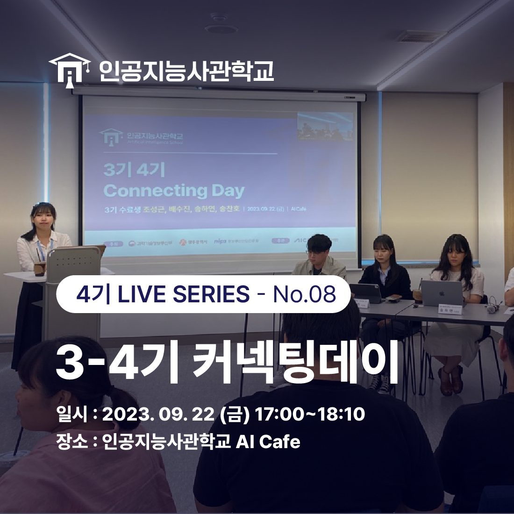
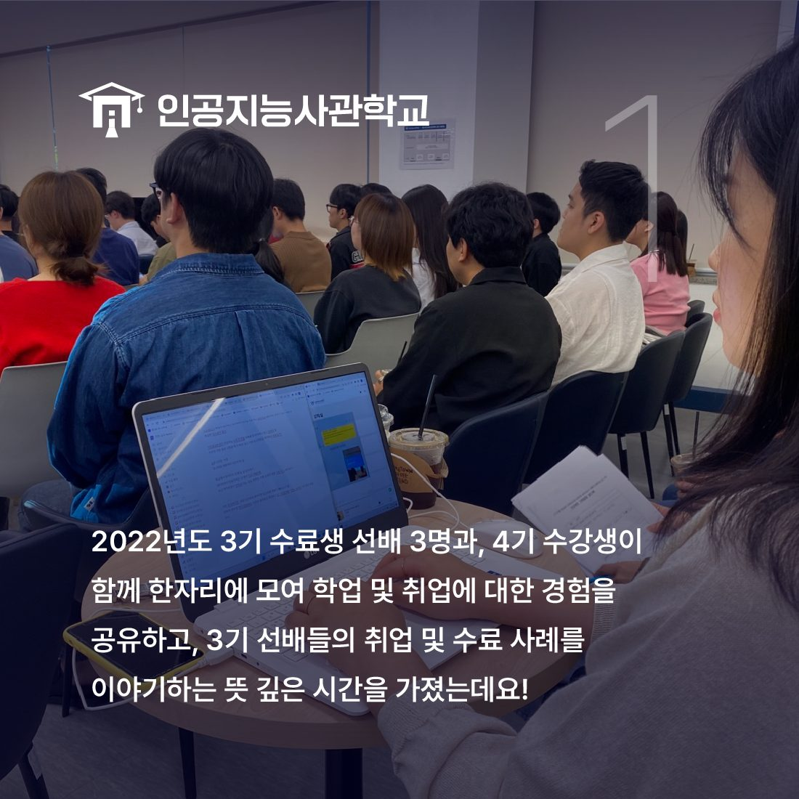
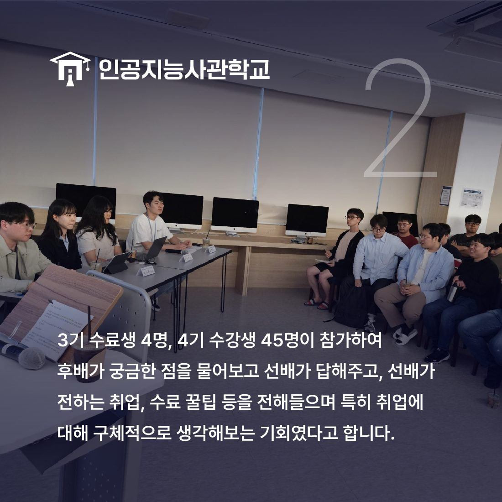

안녕하세요! 인공지능사관학교입니다. 😆

오늘은 9월 22일에 있었던
3-4기 커넥팅 데이 현장을 살펴보려고 합니다!

인공지능사관학교에서는
교육생 만족도와 학습능률 향상을 위해
3기 선배들과의 교류의 장을 마련했는데요.
이번 3-4기 커넥팅데이는 9월 22일 금요일
17시부터 18시 10분까지 1시간 10분동안
인공지능사관학교 AI Cafe에서 진행됐습니다.

연구소, 교육 플랫폼 개발, 데이터 수집, 기획 등
다양한 업무 현장에 있는 3기 수료생 4명과
4기 수강생 45명이 만나 질의응답 시간을 가졌습니다.
선배가 전해주는 학업 및 취업에 대한 경험과
다양한 취업 사례 소개 등 꿀팁을 전해 들으며
수강생의 궁금증을 해결할 수 있었습니다.👏

커넥팅데이에 참여한 교육생은 "특히 취업에 대해
구체적으로 생각해볼 수 있는 기회였다."며
"이런 시간을 더 많이 가질 수 있었으면 좋겠다."고 소감을 밝혔습니다.